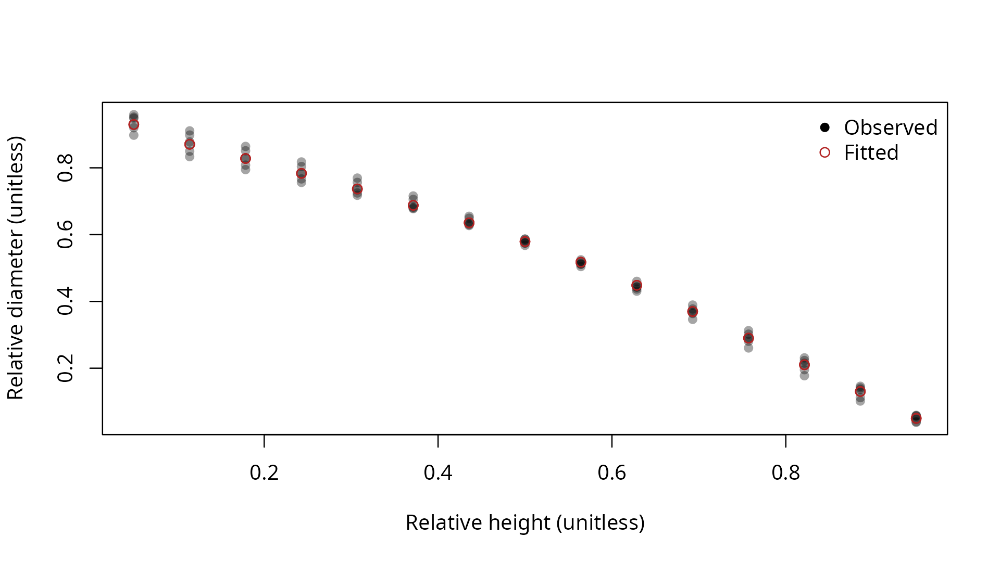

fit_taper() estimates coefficients from repeated stem
measurements. Registered fits supply taper for subsequent stem and log
calculations.
Measurements and forms
The required measurement vectors are tree_id,
dbh, ht, h, dib, and
spcd. Diameter and total height stay constant within each
tree. The shipped measurements are modeled from
example_trees and are synthetic.
## Select the shipped stem measurements
measurements <- example_stem_measurements %>%
select(tree_id, dbh, ht, h, dib, spcd)| tree_id | dbh (inches) | ht (feet) | h (feet) | dib (inches) | spcd |
|---|---|---|---|---|---|
| 1 | 12 | 60 | 3.000 | 11.423 | 202 |
| 1 | 12 | 60 | 6.857 | 10.472 | 202 |
| 1 | 12 | 60 | 10.714 | 9.927 | 202 |
| 1 | 12 | 60 | 14.571 | 9.381 | 202 |
| 1 | 12 | 60 | 18.429 | 8.806 | 202 |
| form | source | structure |
|---|---|---|
| kozak_1988 | Kozak (1988), doi:10.1139/x88-213 | Variable exponent with reference point |
| kozak_2002 | Kozak (2004), doi:10.5558/tfc80507-4 | Variable exponent with tree and height terms |
| max_burkhart | Max and Burkhart (1976), doi:10.1093/forestscience/22.3.283 | Segmented polynomial with fitted join points |
Inputs use inches and feet. Fitted coefficients stay on the published equations’ metric scale, and the diagnostics are reported in inches and feet. The package supplies these forms without published coefficient vectors.
## Fit the segmented taper form
fit <- fit_taper(
tree_id = measurements$tree_id,
dbh = measurements$dbh,
ht = measurements$ht,
h = measurements$h,
dib = measurements$dib,
spcd = measurements$spcd,
form = 'max_burkhart'
)| measurements (count) | root mean squared error (inches) | mean residual (inches) |
|---|---|---|
| 90 | 0.275 | 0.004 |
Taper fit ratios
| tree_id | relative height (unitless) | observed diameter ratio (unitless) | fitted diameter ratio (unitless) |
|---|---|---|---|
| 1 | 0.0500 | 0.9519 | 0.9296 |
| 1 | 0.1143 | 0.8726 | 0.8704 |
| 1 | 0.1786 | 0.8273 | 0.8278 |
| 1 | 0.2429 | 0.7818 | 0.7834 |
| 1 | 0.3071 | 0.7338 | 0.7369 |
| 1 | 0.3714 | 0.6825 | 0.6877 |
| 1 | 0.4357 | 0.6273 | 0.6355 |
| 1 | 0.5000 | 0.5679 | 0.5791 |
| 1 | 0.5643 | 0.5045 | 0.5175 |
| 1 | 0.6286 | 0.4371 | 0.4483 |
| 1 | 0.6929 | 0.3661 | 0.3699 |
| 1 | 0.7571 | 0.2919 | 0.2901 |
| 1 | 0.8214 | 0.2151 | 0.2103 |
| 1 | 0.8857 | 0.1364 | 0.1304 |
| 1 | 0.9500 | 0.0565 | 0.0499 |
| 2 | 0.0500 | 0.9590 | 0.9296 |
| 2 | 0.1143 | 0.9106 | 0.8704 |
| 2 | 0.1786 | 0.8641 | 0.8278 |
| 2 | 0.2429 | 0.8176 | 0.7834 |
| 2 | 0.3071 | 0.7693 | 0.7369 |
| 2 | 0.3714 | 0.7157 | 0.6877 |
| 2 | 0.4357 | 0.6549 | 0.6355 |
| 2 | 0.5000 | 0.5866 | 0.5791 |
| 2 | 0.5643 | 0.5115 | 0.5175 |
| 2 | 0.6286 | 0.4307 | 0.4483 |
| 2 | 0.6929 | 0.3463 | 0.3699 |
| 2 | 0.7571 | 0.2607 | 0.2901 |
| 2 | 0.8214 | 0.1776 | 0.2103 |
| 2 | 0.8857 | 0.1018 | 0.1304 |
| 2 | 0.9500 | 0.0381 | 0.0499 |
| 3 | 0.0500 | 0.9200 | 0.9296 |
| 3 | 0.1143 | 0.8497 | 0.8704 |
| 3 | 0.1786 | 0.8081 | 0.8278 |
| 3 | 0.2429 | 0.7668 | 0.7834 |
| 3 | 0.3071 | 0.7247 | 0.7369 |
| 3 | 0.3714 | 0.6795 | 0.6877 |
| 3 | 0.4357 | 0.6298 | 0.6355 |
| 3 | 0.5000 | 0.5747 | 0.5791 |
| 3 | 0.5643 | 0.5142 | 0.5175 |
| 3 | 0.6286 | 0.4483 | 0.4483 |
| 3 | 0.6929 | 0.3774 | 0.3699 |
| 3 | 0.7571 | 0.3020 | 0.2901 |
| 3 | 0.8214 | 0.2230 | 0.2103 |
| 3 | 0.8857 | 0.1412 | 0.1304 |
| 3 | 0.9500 | 0.0578 | 0.0499 |
| 4 | 0.0500 | 0.9482 | 0.9296 |
| 4 | 0.1143 | 0.8981 | 0.8704 |
| 4 | 0.1786 | 0.8510 | 0.8278 |
| 4 | 0.2429 | 0.8040 | 0.7834 |
| 4 | 0.3071 | 0.7564 | 0.7369 |
| 4 | 0.3714 | 0.7054 | 0.6877 |
| 4 | 0.4357 | 0.6491 | 0.6355 |
| 4 | 0.5000 | 0.5867 | 0.5791 |
| 4 | 0.5643 | 0.5179 | 0.5175 |
| 4 | 0.6286 | 0.4433 | 0.4483 |
| 4 | 0.6929 | 0.3638 | 0.3699 |
| 4 | 0.7571 | 0.2807 | 0.2901 |
| 4 | 0.8214 | 0.1957 | 0.2103 |
| 4 | 0.8857 | 0.1119 | 0.1304 |
| 4 | 0.9500 | 0.0400 | 0.0499 |
| 5 | 0.0500 | 0.8977 | 0.9296 |
| 5 | 0.1143 | 0.8334 | 0.8704 |
| 5 | 0.1786 | 0.7947 | 0.8278 |
| 5 | 0.2429 | 0.7563 | 0.7834 |
| 5 | 0.3071 | 0.7178 | 0.7369 |
| 5 | 0.3714 | 0.6777 | 0.6877 |
| 5 | 0.4357 | 0.6330 | 0.6355 |
| 5 | 0.5000 | 0.5821 | 0.5791 |
| 5 | 0.5643 | 0.5245 | 0.5175 |
| 5 | 0.6286 | 0.4601 | 0.4483 |
| 5 | 0.6929 | 0.3892 | 0.3699 |
| 5 | 0.7571 | 0.3125 | 0.2901 |
| 5 | 0.8214 | 0.2310 | 0.2103 |
| 5 | 0.8857 | 0.1460 | 0.1304 |
| 5 | 0.9500 | 0.0589 | 0.0499 |
| 6 | 0.0500 | 0.9300 | 0.9296 |
| 6 | 0.1143 | 0.8777 | 0.8704 |
| 6 | 0.1786 | 0.8304 | 0.8278 |
| 6 | 0.2429 | 0.7832 | 0.7834 |
| 6 | 0.3071 | 0.7357 | 0.7369 |
| 6 | 0.3714 | 0.6862 | 0.6877 |
| 6 | 0.4357 | 0.6328 | 0.6355 |
| 6 | 0.5000 | 0.5747 | 0.5791 |
| 6 | 0.5643 | 0.5114 | 0.5175 |
| 6 | 0.6286 | 0.4429 | 0.4483 |
| 6 | 0.6929 | 0.3697 | 0.3699 |
| 6 | 0.7571 | 0.2923 | 0.2901 |
| 6 | 0.8214 | 0.2117 | 0.2103 |
| 6 | 0.8857 | 0.1290 | 0.1304 |
| 6 | 0.9500 | 0.0467 | 0.0499 |
The plot compares observed and fitted diameter ratios over relative height. Both axes are unitless ratios.

summary() returns coefficients and fit statistics.
predict() returns inside bark diameters in inches.
## Predict diameters at the measured heights
predicted <- measurements %>%
mutate(fitted_dib = predict(object = fit,
newdata = measurements))| tree_id | dbh (inches) | ht (feet) | h (feet) | dib (inches) | spcd | fitted diameter (inches) |
|---|---|---|---|---|---|---|
| 1 | 12 | 60 | 3.000 | 11.423 | 202 | 11.155 |
| 1 | 12 | 60 | 6.857 | 10.472 | 202 | 10.445 |
| 1 | 12 | 60 | 10.714 | 9.927 | 202 | 9.934 |
| 1 | 12 | 60 | 14.571 | 9.381 | 202 | 9.401 |
| 1 | 12 | 60 | 18.429 | 8.806 | 202 | 8.842 |
Supplying group requests a mixed effects fit when
several groups are present. The random effect acts on the Kozak scale
parameter or the segmented form’s b1 parameter. Unseen
groups use population coefficients.
Register fitted coefficients
as_taper_model() creates a model from population
coefficients and retains the fitted species scope. An explicit bark
ratio enables outside bark calculations.
## Create the local model
local_model <- as_taper_model(
x = fit,
model = 'example.segmented',
bark_ratio = 0.9
)
## Register the model for this session
register_taper_model(x = local_model)
## Inspect its specification
local_model$id
#> [1] "example.segmented"
## Measure stems with the registered model
volumes <- stem_volume(dbh = example_trees$dbh,
ht = example_trees$ht,
spcd = example_trees$spcd,
model = local_model$id)| volume (cubic feet) | status |
|---|---|
| 16.540 | 0 |
| 26.442 | 0 |
| 39.672 | 0 |
| 56.710 | 0 |
| 78.040 | 0 |
| 135.500 | 0 |
## Validate and remove the local model
local_model$id
#> [1] "example.segmented"
## Remove the session registration
unregister_taper_model(model = local_model$id)
## Construct a model directly from the fitted coefficients
taper_model_from_coefficients(id = 'example.coefficients',
form = fit$form,
coefficients = fit$coefficients,
spcd = fit$spcd)$id
#> [1] "example.coefficients"new_taper_model()
creates models from existing R callbacks.